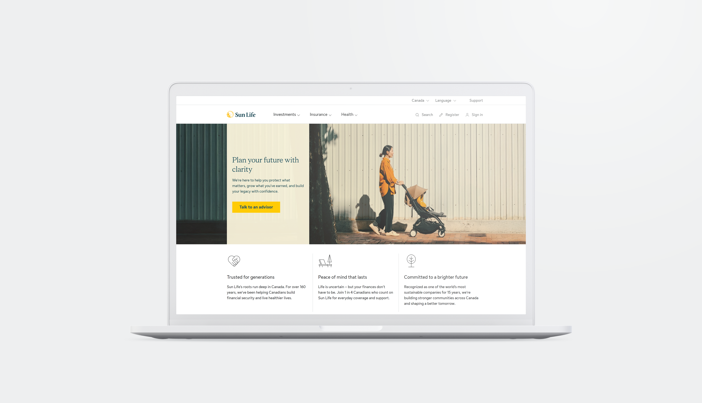

Due to NDA restrictions with Sun Life, I’m unable to display pages. Please reach out if you’d like
to see mockups or examples of the work I contributed to.
Sun Life undertook a large-scale overhaul of its websites across global markets (Canada, U.S., Asia and other).
With thousands of pages spanning product information, customer services, educational content and regulatory
disclosures. The initiative aimed to unify the digital experience under a scalable design system

Timeline
Phase 1
April - December 2024
9 months
Phase 2
January - April 2025
4 months
Challenge
1
Coordinating with stakeholders across regions and languages.
2
Ensuring consistent implementation while balancing global brand standards with localized needs.
3
Maintaining speed to market through efficient CMS publishing and cross-team alignment.
4
Ensuring content and layouts remained accessible and compliant with WCAG standards.
Approach
📐
Design System Implementation
Applied the global Sun Life design system within the CMS, ensuring consistency in typography, color, spacing, and component usage.
🤝
Stakeholder Collaboration
Partnered with UX designers, product owners, and Business Analysts.
⚡
Content Publishing Workflow
Managed end-to-end publishing for a wide range of page types .
✓
UX Alignment
Ensured adherence to UX guidelines provided by regional UX teams.
🌍
Accessibility & Localization
Conducted checks for accessibility standards (WCAG) and adapted layouts for multilingual audiences across different regions.
🔄
Feedback & Iteration
Collaborated with QA and UX teams to test pages pre-launch, addressing issues before going live.
Pages Published
All publishing includes the subpages linked to the main page
UX Guidelines
Each website had their own guidelines in terms of spacing, colours and assets used. The UX team would provide these for us and the publishers would make them go live.
Impact
- Published hundreds of pages across multiple markets, boosting customer satisfaction
- Strengthened brand cohesion while enabling regional flexibility for localized user journeys
- Helped Sun Life maintain accessibility compliance across markets, supporting usability for diverse audiences
- Streamlined publishing workflows by proactively communicating with stakeholders, reducing turnaround time on approvals and launches
Conclusion
This project highlighted the importance of bridging UX design, content management,
and stakeholder alignment at scale. By acting as the link between UX strategy and live
digital execution, the publishing process ensured a consistent, accessible, and
user-friendly experience across Sun Life’s global presence.
By following detailed UX guidelines provided by the UX team, the publishing process upheld the integrity of design, color schemes, spacing, and asset usage for each regional site. The publishing workflow, which included managing multiple subpages for each section, played a pivotal role in maintaining the seamless user experience that Sun Life is known for.
The comprehensive structure of the websites, with diverse page types such as product information, educational resources, and customer portals, demonstrates the scale and complexity of Sun Life's digital presence. The ongoing management and optimization of these digital assets is key to meeting both the needs of their customers and the business’s goals of engagement, accessibility, and brand consistency.